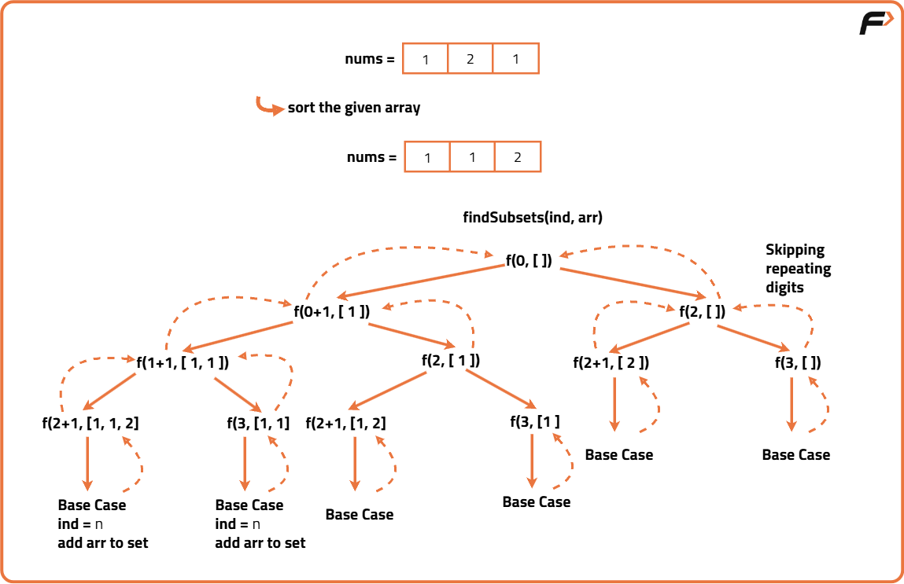

Subset - II | Print all the Unique Subsets
Problem Statement: Given an integer array nums, which can have duplicate entries, provide the power set. Duplicate subsets cannot exist in the solution set. Return the answer in any sequence.
Examples
Input: array[] = [1,2,2] Output: [ [ ],[1],[1,2],[1,2,2],[2],[2,2] ] Explanation: We can have subsets ranging from length 0 to 3. which are listed above. Also the subset [1,2] appears twice but is printed only once as we require only unique subsets.
Input: array[] = [1] Output: [ [ ], [1] ] Explanation: Only two unique subsets are available.
Disclaimer: Here is the practice link to help you assess your knowledge better. It's highly recommend trying to solve it before looking at the solution.
Brute Force Approach
Algorithm
- Define a recursive function to generate subsets.
- The base case for the recursion is when all elements of the input array have been considered.
- When the base case is reached, the currently formed subset is complete.
- Insert this complete subset into a Set data structure to automatically handle uniqueness.
- For each element in the array, make two recursive calls: one where the element is included in the subset, and another where it is not included.
- The main function will initialize a Set to store the unique results.
- It will then start the recursion from the first element.
- Finally, it will convert the Set of unique subsets into a list and return it.

Code
#include <bits/stdc++.h>
using namespace std;
class Solution {
public:
// Recursive helper to generate all subsets
void findSubsets(int ind, vector<int>& nums, vector<int>& ds, set<vector<int>>& result) {
// Base case: if we've considered all elements, add the current subset to the result set
if (ind == nums.size()) {
result.insert(ds);
return;
}
// Choice 1: Include the element at the current index
ds.push_back(nums[ind]);
findSubsets(ind + 1, nums, ds, result);
// Backtrack to explore the other choice
ds.pop_back();
// Choice 2: Do not include the element at the current index
findSubsets(ind + 1, nums, ds, result);
}
// Main function to find all unique subsets
vector<vector<int>> subsetsWithDup(vector<int>& nums) {
set<vector<int>> result;
vector<int> ds;
// Sort the array to handle duplicates consistently
sort(nums.begin(), nums.end());
findSubsets(0, nums, ds, result);
// Convert the set of unique subsets to a vector for the final answer
vector<vector<int>> ans(result.begin(), result.end());
return ans;
}
};
// Driver code to test the solution
int main() {
Solution sol;
vector<int> nums = {1, 2, 2};
vector<vector<int>> ans = sol.subsetsWithDup(nums);
// Print the result
cout << "[ ";
for (const auto& subset : ans) {
cout << "[ ";
for (int num : subset) {
cout << num << " ";
}
cout << "] ";
}
cout << "]" << endl;
return 0;
}Complexity Analysis
Time Complexity: O(N² * 2^N). We generate all 2^N possible subsets, and copying each subset into temporary storage costs up to O(N). Additionally, inserting each subset into a balanced BST-based set costs O(log(2^N)) = O(N), resulting in an extra O(N) factor. Combining these gives O(N * 2^N + N² * 2^N) ≈ O(N² * 2^N).
Space Complexity: O(N * 2^N). We store up to 2^N subsets in the set, each subset storing up to N elements in the worst case. Additionally, O(N) space is used for the recursion stack during subset generation.
Optimal Approach
Algorithm
Sorting is essential here because without sorting, duplicates would be scattered and hard to skip correctly. This method is efficient and avoids unnecessary subset generation, making it better in both runtime and memory usage compared to the brute force approach.
- Sort the input array so that duplicates are adjacent.
- Initialize a list to store the current subset and a list of lists to store all unique subsets.
- Use a recursive backtracking function that:
- Adds the current subset to the list of results.
- Iterates from the current index to the end of the array.
- If the current element is the same as the previous one and not at the starting index of this recursion, skip it.
- Include the current element in the subset and recurse for the next index.
- Backtrack by removing the last added element.
- Return the list of all unique subsets.
Code
#include <bits/stdc++.h>
using namespace std;
class Solution {
public:
// Function to generate all unique subsets
void backtrack(int start, vector<int>& nums, vector<int>& current, vector<vector<int>>& result) {
// Add the current subset to result
result.push_back(current);
// Iterate over the array from 'start' index
for (int i = start; i < nums.size(); i++) {
// Skip duplicates: if current number is same as previous and not at the start index
if (i > start && nums[i] == nums[i - 1]) continue;
// Include nums[i] in current subset
current.push_back(nums[i]);
// Recurse for next index
backtrack(i + 1, nums, current, result);
// Backtrack: remove last added element
current.pop_back();
}
}
// Main function to get unique subsets
vector<vector<int>> subsetsWithDup(vector<int>& nums) {
// Sort the array to handle duplicates
sort(nums.begin(), nums.end());
vector<vector<int>> result;
vector<int> current;
// Start backtracking from index 0
backtrack(0, nums, current, result);
return result;
}
};
// Driver code
int main() {
Solution obj;
int n;
cin >> n;
vector<int> nums(n);
for (int i = 0; i < n; i++) cin >> nums[i];
vector<vector<int>> ans = obj.subsetsWithDup(nums);
for (auto subset : ans) {
cout << "[";
for (int i = 0; i < subset.size(); i++) {
cout << subset[i];
if (i != subset.size() - 1) cout << ",";
}
cout << "] ";
}
cout << endl;
return 0;
}
Complexity Analysis
Time Complexity: O(2^N),In the worst case (all unique elements), we generate all possible subsets, which is 2^N. Sorting takes O(N log N), so total complexity is O(2^N + N log N) ≈ O(2^N).
Space Complexity: O(N) ,Due to recursion depth and storage of the current subset in the call stack. The output storage is O(2^N) for all subsets.